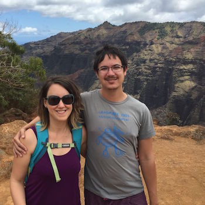
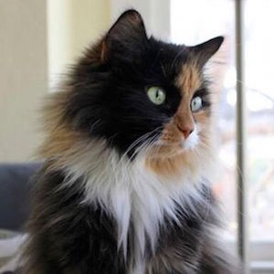

About Me
 
My name is Monique DeSalvo. I'm from New Orleans, Louisiana and have lived in the Bay Area since 2010. I live with my partner, Toby and my cat, Charlene in Potrero Hill.
In my free time I enjoy camping, hiking, laser cutting things, and taking newbie industrial art workshops. I recently attended a metalworking workshop in Big Sur that was a super fun. I also love going to small outdoor music festivals in the summer.